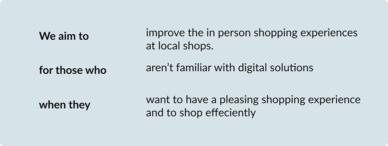
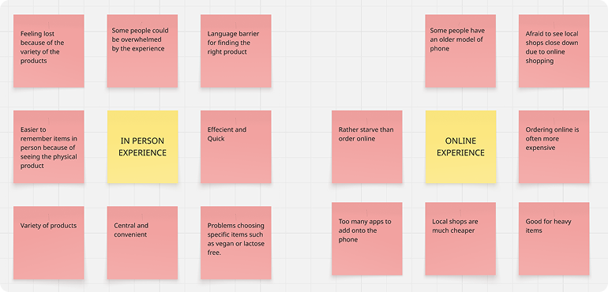
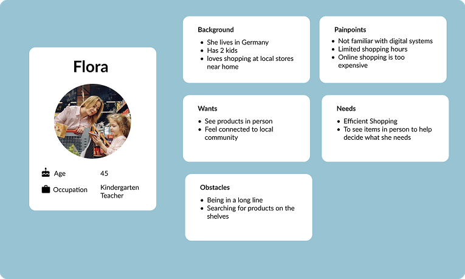
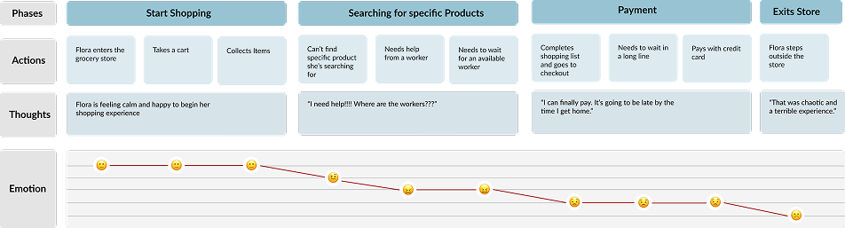
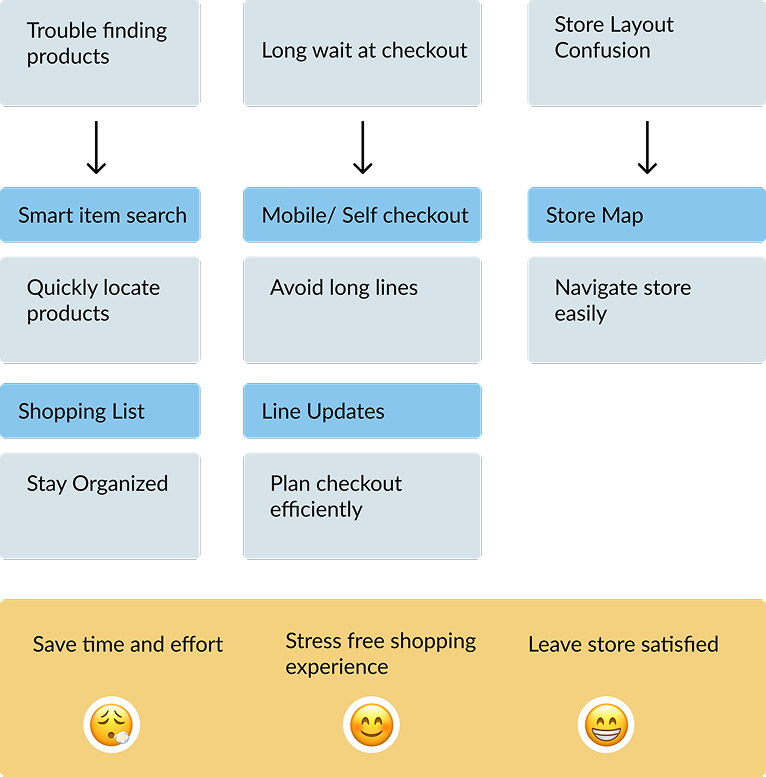

UX Case Study · Concept
Aldi In-Store Shopping App
A concept app that makes in-person grocery shopping faster and calmer — designed for the shoppers who’d rather stay out of online delivery.

01 — Overview
Most grocery tech pushes people online. Some don’t want to go.
Most grocery innovation aims at delivery and online carts. But a sizeable group still prefers shopping in person — and feels left behind by systems that assume everyone wants to move online. Aldi is a concept app for them: it keeps the in-store trip and removes the friction around it.
I framed the project around one promise, written before any screens:

02 — Research
Listening before designing.
I interviewed shoppers about how they buy groceries and why, then clustered what they said into an affinity map — splitting the in-person experience from the online one.

Three attitudes surfaced again and again: people found local stores easy and convenient, they were skeptical of online systems, and many carried a bias that delivery simply costs more.
03 — Persona
Meet Flora.
Those attitudes converged on one person. Flora is 45, a kindergarten teacher in Germany with two kids. She loves shopping at the local store but isn’t comfortable with digital systems — and she’s worn down by long lines and hunting for products on the shelves.

04 — The current trip
Where a calm errand turns stressful.
Mapping Flora’s current trip showed exactly where things go wrong. She starts calm and happy, then loses time searching for products with no help in sight, and ends drained at a long checkout.

I need help — where are the workers?
05 — Design goals
Turn each pain point into a feature.
Three frictions, three goals. Trouble finding products became a smart item search with a shopping list. Long waits at checkout became mobile / self-checkout with live line updates. Store-layout confusion became an in-store map. All of it pointed at the same outcome: save time, shop stress-free, and leave the store satisfied.

06 — The concept
Keep Flora in the aisles; handle the rest.
I sketched the flow as a storyboard, then built a paper prototype: find a product, scan as you go, follow the store map, and check out with a QR code — no till, no line.


07 — Reflection
Designing for the people who stayed offline.
The concept reframes grocery tech around shoppers who want to stay in the aisles, not skip them — meeting Flora where she already is instead of asking her to change. It directly answers her three frustrations: finding products, waiting to pay, and getting lost in the store.
Given more time, I’d usability-test the self-checkout and store-map flows with shoppers like Flora, and validate the scan-as-you-go interaction on real shelves before committing to higher-fidelity screens.